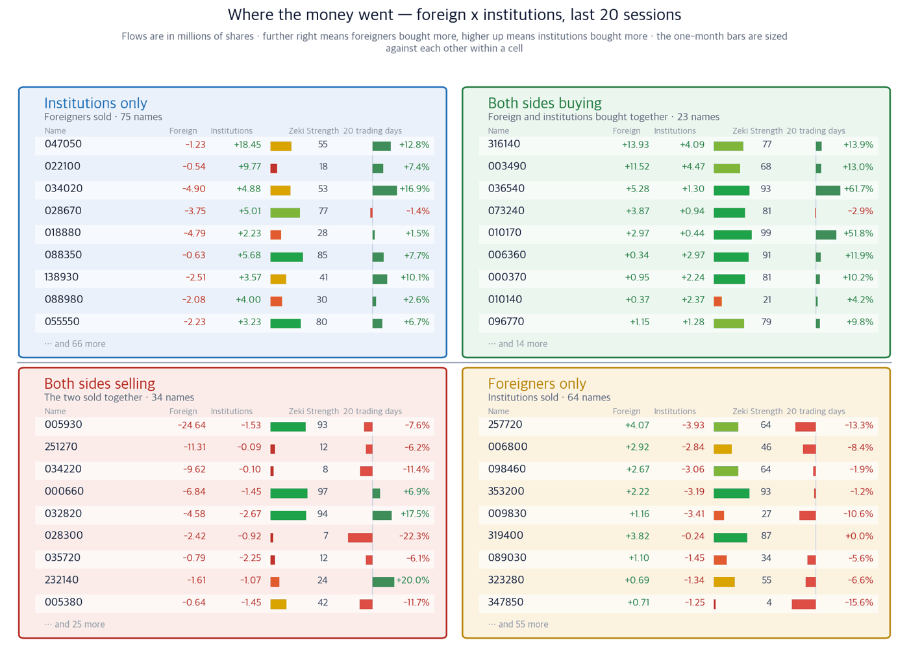
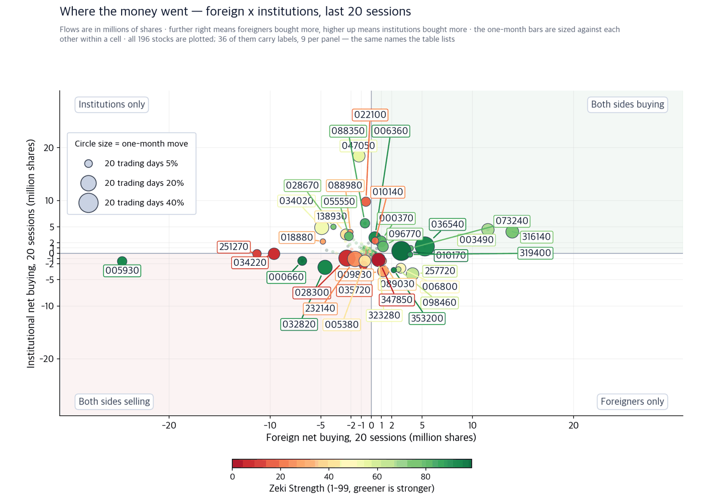

Semiconductor equipment now holds 5 of the KOSDAQ's 10 largest companies
21 September 2026 · figures are 18 September closes
Companies we do not own, found in the newspapers — with the figures behind why they might earn their place.
KOSPI 6,894.23 (+2.66%) | KOSDAQ 827.12 (+0.60%) | Nasdaq Composite 26,522.54 (+0.39%) | S&P 500 7,650.50 (+0.17%) | Zeki Signal Yellow |

The Zeki Signal reduces seven market tests to one light. Green means buying is favoured, yellow means wait, red means hold off. KOSPI is yellow and passed 6 of the 7 tests. KOSDAQ passed 2 and is red.
KOSPI Wait · KOSDAQ Hold off - the stance each light implies.
New York was quiet on 18 September. The Nasdaq Composite rose 0.39% to close around 26,522, and the S&P 500 rose 0.17%. Seoul opens after New York closes, so that is the board Monday starts from.
Executive summary
Three conclusions first
At the start of the year no semiconductor equipment or parts maker sat among the ten largest companies on the KOSDAQ. As of 18 September there are five. They took the seats pharmaceutical and biotech names held. (Hankyung, 21 September)
- Samsung Electronics and SK Hynix are together forecast to spend 117 trillion won on plant this year, 56% more than last year. Equipment makers bill against that money.
- Only one name cleared all four of our tests: PSK Holdings (031980). It rose 48.74% over 20 sessions, its Zeki Strength is 96, and foreign and institutional investors both bought it over the same 20 sessions.
- The same paper carries the other side. Stanley Druckenmiller said on 10 September he had cut his AI investment to a fifth of what it was six months earlier. He meets Doosan Enerbility management on 22 September.
This week
| Date | What to watch | What it changes |
|---|---|---|
| 22 Sep | Druckenmiller meets Doosan and Doosan Enerbility management | Money actually committed to power plant would make the case for the electrical-equipment names firmer |
Why the money moved
The names behind it
Back-end equipment
The old order, in which back-end spending followed front-end spending, has broken. As HBM and AI accelerator demand accelerates, packaging and test capacity runs short first, so orders for back-end equipment makers have been pulled forward.
Our read — The only name here that cleared all four tests. It rose 48.74% over 20 sessions, its Zeki Strength is 96, and foreign and institutional investors both bought over the same 20 sessions. The 18 September close sits just 4.3% below its high. Confirming signal - holding above the 18 September close of 159,900 won while a session turns over more than the 50-day average of 208,503 shares. Invalidated if - slipping below the 18 September close of 159,900 won while foreign investors turn from net buyers to net sellers over 20 sessions. |
Our read — Up 11.87% over 20 sessions, but its Zeki Strength of 82 falls short of 90. The 18 September close is 26.1% below its high, and it is down 6.99% over three months. Confirming signal - foreign investors turning to net buying over 20 sessions and Zeki Strength clearing 90. Invalidated if - institutions also turning to net selling over 20 sessions. |
Parts and materials
Parts and materials earn later than equipment. Only after tools arrive, utilisation climbs and wafer starts rise do consumable replacement and chemical use grow with them. That is why some of these prices have not followed yet.
Our read — Its Zeki Strength of 97 is the highest here. It rose 9.46% over 20 sessions and institutions bought 207,643 shares. Foreign investors, though, sold 218,255 shares, and it fell 6.72% over the week. Confirming signal - foreign investors turning net buyers while it holds above the 18 September close of 243,000 won. Invalidated if - institutions turning to net selling over 20 sessions. |
Our read — Up 20.74% over 20 sessions. Its Zeki Strength of 86 falls short of 90, and the 18 September close is 31.3% below its high. Confirming signal - Zeki Strength clearing 90 and foreign investors turning net buyers. Invalidated if - slipping below the 18 September close of 186,300 won while institutions turn net sellers. |
Our read — Its Zeki Strength of 62 is the lowest here. It is down 17.21% over three months and the 18 September close is 33.2% below its high. The story in the paper holds, but the price has not followed. Confirming signal - institutions turning to net buying over 20 sessions and Zeki Strength clearing 80. Invalidated if - slipping below the 18 September close of 28,150 won. |
Power equipment
As AI infrastructure grows, the bottleneck is moving from chips to electricity. Druckenmiller's visit reads as a look at that constraint. He has also said he cut his AI exposure. Both facts belong side by side.
Our read — Up 16.92% over 20 sessions, but Zeki Strength is only 53. Foreign investors sold 4,904,491 shares over the same period, the fifth largest sale among the names we track, and institutions absorbed 4,884,345. The meeting is a diary entry, not an investment decision. Confirming signal - an actual investment or order disclosed after the meeting, with foreign investors turning to net buying over 20 sessions. Invalidated if - no announcement after the meeting and a close below the 18 September level of 85,700 won. |
Our read — Up 34.42% over 20 sessions with a Zeki Strength of 85. Foreign investors sold 237,669 shares and institutions bought 166,788. The 18 September close is 34.2% below its high. Confirming signal - Zeki Strength clearing 90 with volume staying above the 50-day average. Invalidated if - no subsidiary order announced and a close below the 18 September level of 1,449,000 won. |
What we found, on one page
If you would buy today - 1 well grounded: PSK Holdings(031980)
| Theme | Name | Zeki Strength | Weight of evidence |
|---|---|---|---|
| Back-end equipment | PSK Holdings(031980) | 96 | Well grounded |
| Back-end equipment | Eo Technics(039030) | 82 | Needs checking |
| Parts and materials | TSE(131290) | 97 | Grounded |
| Parts and materials | ISC(095340) | 86 | Needs checking |
| Parts and materials | Wonik QnC(074600) | 62 | Thin |
| Power equipment | Doosan Enerbility(034020) | 53 | Needs checking |
| Power equipment | Doosan Corporation(000150) | 85 | Needs checking |
Weight of evidence
Four tests, measured on the 18 September close and on net buying over the 20 sessions to 17 September.
| Name | ①up over 20 sessions | ②Strength 90+ | ③foreign net buy | ④institutional net buy | Met | Weight of evidence |
|---|---|---|---|---|---|---|
| PSK Holdings(031980) | O | O | O | O | 4/4 | Well grounded |
| Eo Technics(039030) | O | X | X | O | 2/4 | Needs checking |
| TSE(131290) | O | O | X | O | 3/4 | Grounded |
| ISC(095340) | O | X | X | O | 2/4 | Needs checking |
| Wonik QnC(074600) | O | X | O | X | 2/4 | Needs checking |
| Doosan Enerbility(034020) | O | X | X | O | 2/4 | Needs checking |
| Doosan Corporation(000150) | O | X | X | O | 2/4 | Needs checking |
Where the money went
Net buying over the 20 sessions to 17 September, across the names we track. Flow data runs one session behind the prices above.


Sectors
By Zeki Strength the leading sectors are oil and gas (90.3), semiconductors and semiconductor equipment (87.0) and life insurance (85.3). Semiconductors also rank third on money, with net buying of 734,165 shares over 20 sessions - the only sector near the top of both lists.
Did the money follow the names we found?
The story can hold while the money does not follow, so we read them apart. Volume is the 18 September session against its own 50-day average.
| Name | Foreign 20d | Institution 20d | Volume vs 50-day |
|---|---|---|---|
| PSK Holdings(031980) | +103,540 | +206,120 | 0.50 |
| Eo Technics(039030) | -271,528 | +352,986 | 0.49 |
| TSE(131290) | -218,255 | +207,643 | 0.42 |
| ISC(095340) | -540,838 | +616,702 | 0.38 |
| Wonik QnC(074600) | +156,386 | -347,971 | 0.72 |
| Doosan Enerbility(034020) | -4,904,491 | +4,884,345 | 0.84 |
| Doosan Corporation(000150) | -237,669 | +166,788 | 1.83 |
Only PSK Holdings and Wonik QnC were bought by foreign investors over the 20 sessions. On the other names institutions did the buying while foreign investors sold.
Intraday checklist
- First 30 minutes - whether foreign investors stay net sellers of Samsung Electronics. They sold 24,638,623 shares over 20 sessions, the largest sale on our list, and the equipment names have risen against that.
- Midday - whether PSK Holdings holds above 159,900 won on volume above its 50-day average.
- Last 30 minutes - whether institutions keep absorbing Doosan Enerbility ahead of the 22 September meeting.
What to watch this week
The single number that decides this week is the 117 trillion won of plant spending. If Samsung Electronics and SK Hynix hold to it, the equipment makers keep billing into 2027. Watch the 22 September meeting for whether anything is actually committed, and the three-year treasury yield around 4.00%.
Source: The Korea Economic Daily (한국경제), 21 September 2026 edition. Prices are 18 September closes; flow data runs to 17 September.
This digest carries names filtered by figures we calculate ourselves. It is not individual investment advice and does not recommend buying or selling any security. Every grade and rank shown is our own calculation, on a simulated portfolio basis. Investing carries risk of loss of capital.
This report is for information only and is not individual investment advice. ZekiRex™ Apex KR runs a rules-based simulated portfolio of 1 billion won — there is no real account, no order and no fill. The performance shown excludes commissions, taxes and slippage, and the price data omits companies that were delisted, which biases the result upward (survivorship bias). Past performance does not guarantee future results, and investing carries risk of loss of capital.
This is the Rex Way, ZekiRex™